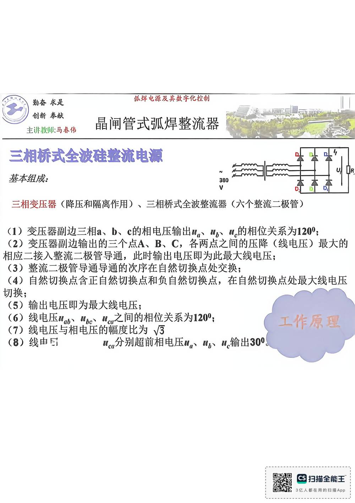

13 手写笔记/1~5周/h-w1-038 晶闸管式弧焊整流
h-w1-038 晶闸管式弧焊整流
📷 原图：
1~5周 焊接电源(1).pdf第 38 页（整页扫描，本库内嵌h-w1-038.jpg）
晶闸管式弧焊整流

本页文字（OCR 整理）
- 晶闸管式弧焊整流
- 三相桥式全波硅整流电源
- 基本组成：
- 三相变压器（降压和隔离作用）、三相桥式全波整流器（六个整流二极管）
- （1）变压器副边三相a、b、c的相电压输出w、“、“。的相位关系为1200；
- （2）变压器副边输出的三个点A、B、C，各两点之间的压降（线电压）最大
- 相应二接入整流二极管导通，此时输出电压即为此最大线电压；
- （3）整流二极管导通导通的次序在自然切换点处交换；
- （4）自然切换点含正自然切换点和负自然切换点，在自然切换点处最大线电压
- （5）输出电压即为最大线电压：
- （6）线电压W6、W0%e、Wc之间的相位关系为1200；
- 工作原理
- （7）线电压与相电压的幅度比为，
- We分別超前相电压W、WW.输出30°g
本页重点（自动标记：含"定义/特点/要求/结论/公式"等，或与课件原句高度一致）
- 三相变压器（降压和隔离作用）、三相桥式全波整流器（六个整流二极管）
OCR 说明
文字由 macOS Vision 识别手写体/翻拍页面得到，错字难免（如"弧"误识为"孤"）；重点标记据此推断，请以页图为准。
对应讲义页
关联
- ← 上一页 · 总览 · 下一页 →
- 讲义：00 第6章 逆变式 导航 · 概念：04 概念地图